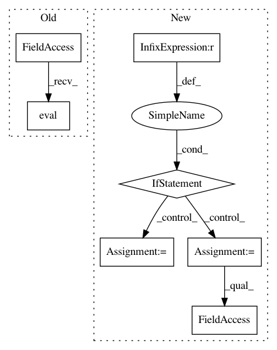

a473c777983b7f2e123f996c9b15607cb1979701,onmt/ModelConstructor.py,,load_test_model,#Any#Any#,117
Before Change
model = make_base_model(model_opt, fields,
use_gpu(opt), checkpoint)
model.eval()
model.generator.eval()
return fields, model, model_opt
def make_base_model(model_opt, fields, gpu, checkpoint=None):
After Change
model_opt = checkpoint["opt"]
for arg in dummy_opt:
if arg not in model_opt:
model_opt.__dict__[arg] = dummy_opt[arg]
model = make_base_model(model_opt, fields,
use_gpu(opt), checkpoint)
model.eval()
model.generator.eval()
return fields, model, model_opt
def make_base_model(model_opt, fields, gpu, checkpoint=None):
Args:
model_opt: the option loaded from checkpoint.
fields: `Field` objects for the model.
gpu(bool): whether to use gpu.
checkpoint: the model gnerated by train phase, or a resumed snapshot
model from a stopped training.
In pattern: SUPERPATTERN
Frequency: 3
Non-data size: 7
Instances
Project Name: OpenNMT/OpenNMT-py
Commit Name: a473c777983b7f2e123f996c9b15607cb1979701
Time: 2018-05-11
Author: stig-arne.gronroos@aalto.fi
File Name: onmt/ModelConstructor.py
Class Name:
Method Name: load_test_model
Project Name: kengz/SLM-Lab
Commit Name: b07f21d59fc5341c861d5ccc7ca01bb4a60829e8
Time: 2018-02-09
Author: lgraesser@users.noreply.github.com
File Name: slm_lab/agent/net/convnet.py
Class Name: ConvNet
Method Name: wrap_eval
Project Name: ikostrikov/pytorch-a2c-ppo-acktr
Commit Name: 4586366c1018257dd448d62f1fc7534e3f5a4338
Time: 2017-11-23
Author: ikostrikov@gmail.com
File Name: enjoy.py
Class Name:
Method Name: